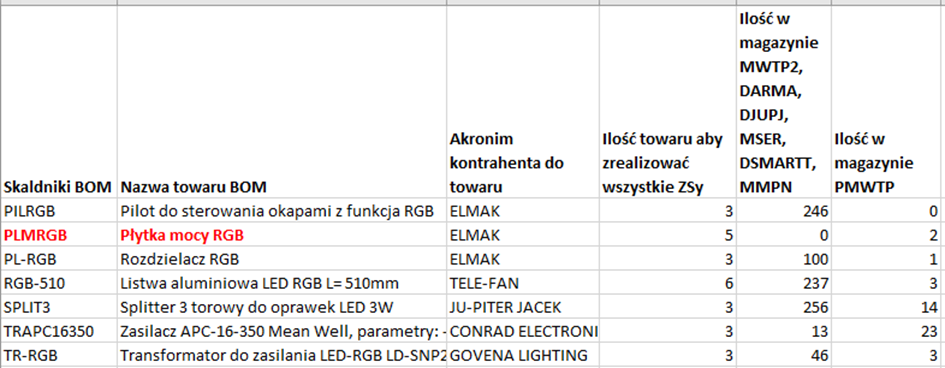

- Kierowcy zgłaszają potrzebę zakupu wózka paletowego elektrycznego:
Oto oferta: - LEMA:
- gwarancja rok na wózek.
na baterie poł roku gwarancji
nie ma opcji przedłużenia gwarancji - kiedys oferowali przedluzanie, ale sie z tego wycofali.
bateria Zelowa - najlepiej nie schodzić poniżej 20% i ładować do pełna
Maks negocjacja 100PLN netto w dół
Serwis na miejscu, części są bardzo dobrze dostępne, serwisują przez cały okres żywotności wózka
przegląd zalecany w czasie gwarancji, po pół roku użytkowania - kilkaset zł. - ale mało kto z tego przeglądu korzysta. - STILL: Wózek droższy, a udźwig mniejszy od LEMA - moim zdaniem szkoda zachodu
- LINDE:
- gwarancja rok lub dwa - nie wiedziała, musi dopytać - gwarancja 2 lata na zasadzie rekojmi.
- serwisują sami
- brak gwarancji na baterie - bateria litowo-jonowa
- nie ma opcji negocjacji -
Soft Touch2,0. – Cena w NORD ok 13,50 USD. Czekamy na prototyp. Mikroprocesory otrzymali. Różnica między Soft Touch 1.0 a 2.0 -> 48,5PLN vs 70,32 PLN
Na przyszły rok będziemy potrzebować ok 3600 szt Soft Touch 2.0 i o tyle spadnie zapotrzebowanie na Soft Touch 1.0. z czego ok 15% do 20 % będą stanowiły płytki poziome. o STM`ów (STM32G030K8T6) mamy 4800 szt czyli komponenty wg mnie będą zabezpieczone.
Oferty firm do wdrożenia ISO 14001

| S8015 | copper wire aim at B hoods |
| S8020 | copper wire aim at B hoods |
W turbinie 6s wyniki są podobne jak te które deklaruje dostawca. Filip sprawdza też te silniki w turbinie 15SK28, później zamontuję je w okapie, przebada głośność i takie pełne porównanie podamy w raporcie. Przypomniałam temat.

| WPLED230 | 12,53 |
| WPLED330 | 15,05 |
| WPLED410 | 16,55 |
Poniżej jak przedstawiają się wyliczenia dla naszego najkrótszego paska (ceny z doliczonym transportem):